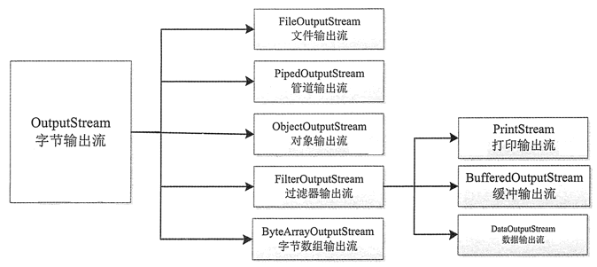

首页 > Java教程 > Java输入/输出流
Java流是什么？输入/输出流又是什么？
在 Java 中所有数据都是使用流读写的。流是一组有序的数据序列，将数据从一个地方带到另一个地方。根据数据流向的不同，可以分为输入（Input）流和输出（Output）流两种。
在学习输入和输出流之前，我们要明白为什么应用程序需要输入和输出流。例如，我们平时用的 Office 软件，对于 Word、Excel 和 PPT 文件，我们需要打开文件并读取这些文本，和编辑输入一些文本，这都需要利用输入和输出的功能。在现实生活中，输入和输出的例子比比皆是。
在前面章节中，我们经常使用“System.out.println”方法，它就是一个输出方法。后面我们会讲述更多的方法，并通过大量的实例来展示它们的用法。
下面详细介绍什么是输入流和输出流，以及 Java 中流的类型及每种类型的相关类。
输入就是将数据从各种输入设备（包括文件、键盘等）中读取到内存中，输出则正好相反，是将数据写入到各种输出设备（比如文件、显示器、磁盘等）。例如键盘就是一个标准的输入设备，而显示器就是一个标准的输出设备，但是文件既可以作为输入设备，又可以作为输出设备。
数据流是 Java 进行 I/O 操作的对象，它按照不同的标准可以分为不同的类别。
数据流的处理只能按照数据序列的顺序来进行，即前一个数据处理完之后才能处理后一个数据。数据流以输入流的形式被程序获取，再以输出流的形式将数据输出到其它设备。图 1 为输入流模式，图 2 为输出流模式。

图 1 输入流模式

图 2 输出流模式

图 3 InputStream类的层次结构图
InputStream 类中所有方法遇到错误时都会引发 IOException 异常。如下是该类中包含的常用方法。
上述最后 3 个方法一般会结合在一起使用，首先使用 markSupported() 判断，如果可以重复读取，则使用 mark(int readLimit) 方法进行标记，标记完成之后可以使用 read() 方法读取标记范围内的字节数，最后使用 reset() 方法使输入流重新定位到标记的位置，继而完成重复读取操作。
Java 中的字符是 Unicode 编码，即双字节的，而 InputerStream 是用来处理单字节的，在处理字符文本时不是很方便。这时可以使用 Java 的文本输入流 Reader 类，该类是字符输入流的抽象类，即所有字符输入流的实现都是它的子类，该类的方法与 InputerSteam 类的方法类似，这里不再介绍。
OutputStream 类是所有字节输出流的超类，用于以二进制的形式将数据写入目标设备，该类是抽象类，不能被实例化。OutputStream 类提供了一系列跟数据输出有关的方法，如下所示。
在学习输入和输出流之前，我们要明白为什么应用程序需要输入和输出流。例如，我们平时用的 Office 软件，对于 Word、Excel 和 PPT 文件，我们需要打开文件并读取这些文本，和编辑输入一些文本，这都需要利用输入和输出的功能。在现实生活中，输入和输出的例子比比皆是。
在前面章节中，我们经常使用“System.out.println”方法，它就是一个输出方法。后面我们会讲述更多的方法，并通过大量的实例来展示它们的用法。
下面详细介绍什么是输入流和输出流，以及 Java 中流的类型及每种类型的相关类。
什么是输入/输出流
Java 程序通过流来完成输入/输出，所有的输入/输出以流的形式处理。因此要了解 I/O 系统，首先要理解输入/输出流的概念。输入就是将数据从各种输入设备（包括文件、键盘等）中读取到内存中，输出则正好相反，是将数据写入到各种输出设备（比如文件、显示器、磁盘等）。例如键盘就是一个标准的输入设备，而显示器就是一个标准的输出设备，但是文件既可以作为输入设备，又可以作为输出设备。
数据流是 Java 进行 I/O 操作的对象，它按照不同的标准可以分为不同的类别。
- 按照流的方向主要分为输入流和输出流两大类。
- 数据流按照数据单位的不同分为字节流和字符流。
- 按照功能可以划分为节点流和处理流。
数据流的处理只能按照数据序列的顺序来进行，即前一个数据处理完之后才能处理后一个数据。数据流以输入流的形式被程序获取，再以输出流的形式将数据输出到其它设备。图 1 为输入流模式，图 2 为输出流模式。
图 1 输入流模式
图 2 输出流模式
输入流
Java 流相关的类都封装在 java.io 包中，而且每个数据流都是一个对象。所有输入流类都是 InputStream 抽象类（字节输入流）和 Reader 抽象类（字符输入流）的子类。其中 InputStream 类是字节输入流的抽象类，是所有字节输入流的父类，其层次结构如图 3 所示。图 3 InputStream类的层次结构图
InputStream 类中所有方法遇到错误时都会引发 IOException 异常。如下是该类中包含的常用方法。
| 名称 | 作用 |
|---|---|
| int read() | 从输入流读入一个 8 字节的数据，将它转换成一个 0~ 255 的整数，返回一个整数，如果遇到输入流的结尾返回 -1 |
| int read(byte[] b) | 从输入流读取若干字节的数据保存到参数 b 指定的字节数组中，返回的字节数表示读取的字节数，如果遇到输入流的结尾返回 -1 |
| int read(byte[] b,int off,int len) | 从输入流读取若干字节的数据保存到参数 b 指定的字节数组中，其中 off 是指在数组中开始保存数据位置的起始下标，len 是指读取字节的位数。返回的是实际读取的字节数，如果遇到输入流的结尾则返回 -1 |
| void close() | 关闭数据流，当完成对数据流的操作之后需要关闭数据流 |
| int available() | 返回可以从数据源读取的数据流的位数。 |
| skip(long n) | 从输入流跳过参数 n 指定的字节数目 |
| boolean markSupported() | 判断输入流是否可以重复读取，如果可以就返回 true |
| void mark(int readLimit) | 如果输入流可以被重复读取，从流的当前位置开始设置标记，readLimit 指定可以设置标记的字节数 |
| void reset() | 使输入流重新定位到刚才被标记的位置，这样可以重新读取标记过的数据 |
Java 中的字符是 Unicode 编码，即双字节的，而 InputerStream 是用来处理单字节的，在处理字符文本时不是很方便。这时可以使用 Java 的文本输入流 Reader 类，该类是字符输入流的抽象类，即所有字符输入流的实现都是它的子类，该类的方法与 InputerSteam 类的方法类似，这里不再介绍。
输出流
在 Java 中所有输出流类都是 OutputStream 抽象类（字节输出流）和 Writer 抽象类（字符输出流）的子类。其中 OutputStream 类是字节输出流的抽象类，是所有字节输出流的父类，其层次结构如图 4 所示。

图 4 OutputStream 类的层次结构图
图 4 OutputStream 类的层次结构图
OutputStream 类是所有字节输出流的超类，用于以二进制的形式将数据写入目标设备，该类是抽象类，不能被实例化。OutputStream 类提供了一系列跟数据输出有关的方法，如下所示。
| 名称 | 作用 |
|---|---|
| int write(b) | 将指定字节的数据写入到输出流 |
| int write (byte[] b) | 将指定字节数组的内容写入输出流 |
| int write (byte[] b,int off,int len) | 将指定字节数组从 off 位置开始的 len 字节的内容写入输出流 |
| close() | 关闭数据流，当完成对数据流的操作之后需要关闭数据流 |
| flush() | 刷新输出流，强行将缓冲区的内容写入输出流 |
关注公众号「站长严长生」，在手机上阅读所有教程，随时随地都能学习。内含一款搜索神器，免费下载全网书籍和视频。

微信扫码关注公众号